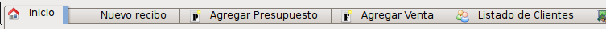

La pantalla inicial le brinda un acceso directo a las opciones que más utiliza diariamente.
Cada uno de los iconos lo llevará a una acción predeterminada. Las cuales están definidas de ésta manera:
El programa se maneja mediante pestañas, al igual que un explorador web moderno.
Las pestañas le permiten tener varías acciones posibles ejecutándose al mismo tiempo y poder intercambiar entre ellas.

La primer pestaña siempre será la pantalla de inicio. Esta pestaña no se puede cerrar y le brinda un acceso rápido aún cuando esté trabajando sobre otra pestaña abierta.
Para volver a la pestaña de elección, presione sobre el título.
Para cerrar una pestaña, puede elegir la acción Cerrar de la barra de acciones o presionar el botón que se encuentra en la esquina superior derecha.
Todas las acciones posibles a realizar sobre el contenido de una pestaña aparecerán en la barra de acciones. Ésta se ubica de manera predeterminada en el borde derecho del programa, aunque puede ser movido a alguno de los bordes de la aplicación que crea conveniente, tomándolo desde el borde superior y arrastrándolo hacia otra ubicación.